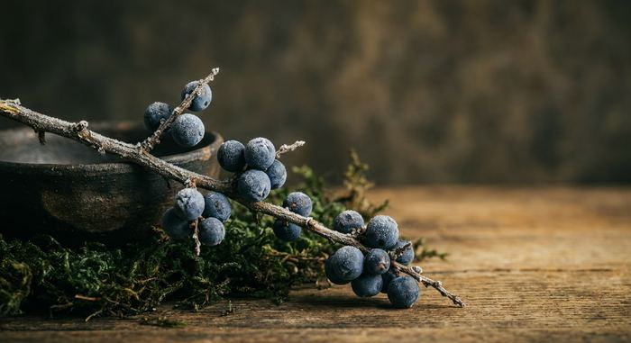

マティーニ完全ガイド
歴史・黄金比・派生・推奨ジンまで網羅

カクテルの王様と呼ばれる「マティーニ」。たった2素材（ジン＋ドライベルモット）でありながら、比率・温度・ガーニッシュ・ステア技法・ジン選び・グラスの形・氷の質・ベルモットの種類──あらゆる変数で表情が劇的に変わる、奥深い飲み物です。本ガイドでは、マルチネス起源説からヘミングウェイ「モンゴメリー」、ボンドのヴェスパー、IBA（International Bartenders Association）公式レシピ、ステアvsシェイク論争、家庭でのプロ仕様、ジャパニーズクラフトジン237銘柄を使った推奨レシピまでを徹底網羅。このページ1枚で「自分が好きなマティーニ」が見つかるレベルで作りました。
最終更新: 2026年5月9日 ／ 出典: IBA（International Bartenders Association）公式レシピ、Difford's Guide、Liquor.com、Punch Drink Magazine、各ジン蒸溜所公式ドリンク提案、各ベルモット製造元公式
1. マティーニの起源：3つの説と19世紀の謎
マティーニ（Martini）は、ジンとドライベルモットを主材料とするスターラー式（ステア式）カクテル。19世紀後半のアメリカで誕生したとされていますが、正確な発祥地・発祥時期については複数の説が並立しており、業界資料でも完全には統一されていません。代表的な説を3つ紹介します。
説①：マルティネス（Martinez）由来説
もっとも広く支持されているのが、19世紀後半のサンフランシスコ近郊の街マルティネス（Martinez）で生まれた「マルティネスカクテル」が原型という説。1880年代の業界資料に「Martinez Cocktail」のレシピが記録されています。当初はオールド・トム・ジン（ほのかな甘みのあるジン）とスイートベルモットを使う、現代より甘い設計でした。これが時代を経てロンドンドライ・ジン＋ドライベルモットに変化し、現在のドライマティーニになったとする説です。
説②：ホテルマン マルティーニ氏 命名説
ニューヨークのホテル「Knickerbocker Hotel」のバーテンダーマルティーニ・ディ・アルマ・ディ・タジオ（Martini di Arma di Taggia）氏が、20世紀初頭に標準的レシピを確立し、自身の名前にちなんで命名したという説。彼が考案したとされる比率はジン：ベルモット = 1:1、オリーブ添えで、現代の50:50マティーニの源流とも言われます。
説③：イタリア「マルティーニ&ロッシ」由来説
イタリアの著名なベルモット製造業者「Martini & Rossi（マルティーニ&ロッシ）」（1863年創業）の名前がカクテル名の由来というシンプルな説。実際、初期のマティーニはマルティーニ&ロッシのスイートベルモット（ロッソ）が頻繁に使われていました。ただし、カクテル誕生のタイミングと製品名の関係には諸説あり、決定的な裏付けは現存しません。
20世紀にはヘミングウェイ（モンゴメリー15:1の愛飲者）、チャーチル（「ベルモットの瓶を見つめながらジンを注ぐだけ」のジョークで有名）、ジェームズ・ボンド（イアン・フレミング『カジノ・ロワイヤル』で考案したヴェスパー）、FDR・ニクソンといった政治家・著名人が愛飲したことで、マティーニは世界的なアイコンとなり、「カクテルの王様」の地位を確立しました。
時代別の比率変遷
| 時代 | ジン:ベルモット | 背景 |
|---|---|---|
| 1880年代 | 2:1（甘め） | オールド・トム・ジン＋スイートベルモット時代 |
| 1900年代 | 1:1 | ロンドンドライ・ジン＋ドライベルモットへ移行 |
| 1930-1950年代 | 3:1〜4:1 | 禁酒法明け、より辛口へ |
| 1960-1980年代 | 6:1〜10:1 | 「ベルモットは少なければ少ないほど洗練」 |
| 2000年代以降 | ふり幅が広がる | ウェット復権、コンテンポラリー、50:50リバイバル |
つまり「マティーニ＝極限まで辛口」というのは20世紀後半の特定時期に強かった流行であって、歴史的に唯一の正解ではない。21世紀のいま、ウェット派・50:50派・コンテンポラリー派・ナケッド派が並立しているのは、本来のマティーニの懐の深さを取り戻した形とも言えます。
2. クラシック・マティーニの定義（IBA公式レシピ）
世界のバーテンダーが標準とするのは、IBA（International Bartenders Association、国際バーテンダー協会）が定める公式レシピです。IBAは1951年設立の国際組織で、世界のバーテンダー連盟が加盟し、公式カクテルレシピを認定しています。
・ドライベルモット 10ml
・氷を入れたミキシンググラスで15〜20回ステア
・冷えたカクテルグラス（コニカル/Vグラス）に注ぐ
・レモンピールまたはオリーブを添える
ジンとベルモットの比率は6:1。これがIBAの基準です。ただし現代の高級バーでは10:1〜15:1の「エキストラドライ」が主流で、家庭で楽しむなら6:1〜8:1あたりが扱いやすい比率と言えます。
IBA定義の重要なポイント
- 「ステア」: シェイクではない。マティーニは原則ステア式カクテル
- 「ガーニッシュは オリーブ or レモンピール」: パールオニオンに変えるとギブソン、別物として扱われる
- ベルモットは「ドライ」: スイートベルモットを使うと別カクテル（マルティネスや「パーフェクト・マティーニ」になる）
- ジンは「ロンドンドライ・ジン」が暗黙の前提: ジュニパー主体の伝統的ジンがベース
- カクテルグラス: 容量120〜180mlのVグラスまたはクープグラスが標準
IBAが2020年代に公開している公式レシピは「ジン 60ml + ドライベルモット 10ml」に確定しており、これが世界共通の出発点です。ここから「ドライ寄りに振るかウェット寄りに振るか」が、各バーテンダー・各個人の判断となります。
3. 基本のドライマティーニ 家庭版レシピ
ここでは、自宅で「お店レベル」のマティーニを作るための実用レシピを示します。
材料（1杯分）
- ジン 60ml（推奨：47%以上の高アルコール度数。低度数だとベルモットや氷に負ける）
- ドライベルモット 10ml（ノイリー・プラットまたはマンチーノ・セッコ、ドラン・シャンベリー）
- レモンピール 1切れ または グリーンオリーブ 1〜2個
- 氷（クリアアイス推奨、丸氷ではなく2〜3cm角のキューブ）
手順
- カクテルグラスを冷凍庫で冷やす（最低30分、できれば1時間）
- ミキシンググラス（または小さめのジャグ）に氷を8分目まで入れる
- ベルモット10mlを入れ、軽くステアしてから余分な液を捨てる「リンス」を行うか、そのまま残すかは好み次第（リンスならエキストラドライに近い）
- ジン60mlを注ぐ
- バースプーンで15〜20回、滑らかに回転。氷を割らないようゆっくり
- 冷やしたカクテルグラスにストレーナーで濾しながら注ぐ
- レモンピール（または串刺しのオリーブ）を添える
レモンピールの「正しい」加え方
レモンピールは皮の油（精油）を抽出して香りをグラスに移すのが目的。手順は──
- レモン皮を親指大に切る（白い綿の部分は薄く）
- 皮を縦長に持ち、グラスの上で「ねじる」。皮の油がグラス縁に落ちる
- 皮の表面でグラスの縁を軽く「ノックする」（kissと表現される技法）
- グラスの中に落とすか、好みで縁に飾る or 捨てる
ベテランバーテンダーは皮を捨てる派が多い。香りだけが移り、酸味が混入しないためです。
ポイント：「冷たさ」と「適度な水分」がマティーニの命
ステアの目的は氷を溶かして温度を下げ、同時に約20%の水を加えること。シェイクすると過度に水分が入り、空気も含むため濁ってしまいます。マティーニはステア（混ぜる）であってシェイクではないのが王道（※ジェームズ・ボンドの「シェイクで」は例外的演出）。プロのバーカウンターでマティーニを注文すると、注がれた液が「光のテクスチャ」を持つほど透明なのは、ステアと適切な希釈の結果です。
4. ジン:ベルモット 比率の地図（5段階）
マティーニの個性はベルモットの量で決まります。ベルモットは香りと甘みを与える役割で、量が少ないほどジンの個性がストレートに出ます。
| タイプ | ジン:ベルモット | 特徴・推奨用途 |
|---|---|---|
| 50/50（フィフティフィフティ） | 1:1 | 初期マティーニの原型に近い甘め設計。食前酒として、軽めの料理と合う |
| ウェットマティーニ | 3:1〜4:1 | ベルモットが豊富。ハーブ感と甘みが立ち、女性や初心者向け |
| クラシック（IBA基準） | 6:1 | バランスの取れた標準。家庭向けの黄金比 |
| ドライマティーニ | 8:1〜10:1 | バーで定番のスタンダード。ジンのキャラがしっかり前に |
| エキストラドライ | 15:1〜 | ベルモットは「香り付け」のみ。高級バーの本格仕様 |
| ナケッド/モンゴメリー | ほぼなし〜15:1 | 「冷えたジンそのもの」。ボタニカルの個性を最大限に |
著名人の比率エピソード
チャーチルの「ベルモット凝視法」: チャーチルの有名な逸話に、「ベルモットの瓶を見つめながらジンを注ぐだけで十分」というものがあります。これはエキストラドライをさらに極端化したジョークですが、ジン重視の気持ちはよく伝わります。実際の彼の好みは10:1程度だったと伝えられます。
ヘミングウェイの「モンゴメリー」: ヘミングウェイは15:1の比率を好みました。これは第二次大戦の英国陸軍司令官モンゴメリー将軍が「敵に対して15:1の戦力比でなければ攻撃しない」と豪語したエピソードに由来する、ヘミングウェイ流のニックネーム。文学的なジョーク兼極辛口設計です。
FDRの「ハドソン川」: ルーズベルト大統領は2:1のウェット派でしたが、独特の手順を好みました。冷えたグラスにベルモットをスプレーし、ジンを注いでステア、レモンの皮ねじりを加える──第二次大戦中、しばしばホワイトハウスで自ら作っていたと言われます。
ボンドの「ヴェスパー」: 詳細は次セクションで扱いますが、ボンドはジン3：ウォッカ1：リレ・ブラン0.5の特殊比率を考案。シェイク指定だったことも有名です。
どの比率を選ぶべきか：シーン別おすすめ
家庭で1杯目を作るなら、5:1〜6:1から始めることをおすすめします。これはIBAの基準に近く、ベルモットの香りが感じられつつジンも主役になる「妥協のない中庸」。慣れてきたら好みに応じてウェット（3:1）寄りかドライ（10:1）寄りに振っていくとよいでしょう。
ベルモットの銘柄を変えると、同じ比率でも全く違う印象になります。ノイリー・プラットなら清涼感、ドラン・シャンベリーならフローラル、カルパノ・スイートならハーブの厚み。比率と銘柄の組み合わせ実験が、マティーニ探求の第一歩です。
5. 派生バリエーション7種：ヴェスパー・ギブソン・ダーティほか
マティーニには長い歴史で生まれた多数の派生バリエーションがあります。代表的な7種を解説します。
① ヴェスパー（Vesper Martini）
ジン60ml＋ウォッカ20ml＋リレ・ブラン10ml。イアン・フレミングの007小説『カジノ・ロワイヤル』でジェームズ・ボンドが考案した架空の名作カクテル。「シェイクで、ステアではない」（"Shaken, not stirred"）がボンドの指定で、現代では実在のスタンダードカクテルとして定着。レモンピールが伝統的なガーニッシュ。「ヴェスパー」とはボンド・ガールのVesper Lyndの名から。リレ・ブランはフランスのアペリティフワインで、入手困難なら近年はコッキアメリカーノやドライベルモットで代用可。
② ギブソン（Gibson）
ドライマティーニのオリーブを「パールオニオン」に置き換えたもの。塩漬け小玉ねぎの酸味と塩味が、ジンの香りに新たな次元を加えます。ドラマ『マッドメン』（Mad Men）で広告代理店のドン・ドレイパーが愛飲することでも有名で、20世紀初頭のサンフランシスコで生まれたとされる古典派生。命名はチャールズ・ダナ・ギブソン氏（「ギブソン・ガール」のイラストで有名）に由来する説など複数あり。
③ ダーティマティーニ（Dirty Martini）
ベースのドライマティーニにオリーブ漬けの塩水（オリーブブライン）を5〜10ml加えたもの。塩味とオリーブ感が強まり、温度感も増します。ニューヨーク発祥とされ、「夕食前のアペリティフ」として食欲を刺激する効果あり。本式ではオリーブを2〜3個串刺しで添えます。「フィルシー（Filthy）」「エクストラ・ダーティ」と呼ばれるさらにブラインを増量する派生もあり、塩味好きには根強い支持があります。
④ パーフェクトマティーニ（Perfect Martini）
ドライベルモットとスイートベルモットを同量ずつ使うバリエーション。ジン60mlに対し、ドライ5ml＋スイート5ml。甘みと苦みのバランスがさらに複雑になり、ハーブ感が立体化します。クラシック書では「ジン・アンド・イット」とも呼ばれる派生。レモンピールよりオレンジピールの方が合うとされます。
⑤ 50/50（Fifty-Fifty Martini）
ジン:ベルモット = 1:1。極端に甘く感じがちで賛否分かれる比率ですが、ベルモットの個性が強い銘柄（マンチーノ・セッコなど）と組み合わせると、ハーブのレイヤーが楽しめます。食前酒に近い性格で、軽めの食事との相性が良好。20世紀初頭の本来のマティーニの比率に近いとされ、近年復権の動きあり。プロのバーで「クラシック・スタイル50/50」を頼むと、若い世代のバーテンダーが歓迎する傾向にあります。
⑥ ブレッドフォードマティーニ（シェイク式）
「シェイク」で作るマティーニ。氷の砕ける音とともに細かな氷片がカクテルに混ざり、独特の"アイスシャード（ice shard）"感が生まれます。ボンド流の演出ですが、本格派からは正統と認められない場合も。氷を雑に扱わず、10秒以内のショートシェイクに留めるのが現代式です。「シェイクすると味が広がる、ステアすると味が締まる」というのが業界の通説で、好みの問題として扱うのが妥当でしょう。
⑦ 和マティーニ（Japanese-style Martini）
ジャパニーズジンを使い、ガーニッシュをレモンピール→柚子皮、オリーブ→梅干し（種抜き）、玉露の冷茶を数滴に置き換える日本流アレンジ。明確な定義はありませんが、季の美・ROKU・ohoro等の和素材主役ジンで作ると、和洋折衷の食前酒として日本料理にも合います。バーテンダーによっては木の芽（葉山椒）を1枚浮かべる、シソの葉でリンスする等の工夫を加える人もいます。
追加で押さえたい派生：FDR、フランクリン、スマーモア
業界資料によく登場する派生として、FDRマティーニ（オリーブブライン＋ベルモット2:1ウェット）、フランクリンD・マティーニ（FDR大統領のスタイル、レモン1切れ＋オリーブ2個）、スマーモア（Smoky Martini）（ジン＋ベルモット＋スコッチ数滴）、ダールモアマティーニ（マッカランやダールモアといったシングルモルトでリンス）などがあります。すべて「ベース＋ドライベルモット＋ガーニッシュ」のフォーマットを応用したもので、自分流のバリエーションを作る出発点にもなります。
6. ステア vs シェイク 論争：ボンドと正統派の対立
マティーニ最大の論争が、「ステアか、シェイクか」。これは単なる手順の違いではなく、できあがるカクテルの物理的・官能的特性が大きく異なる、本質的な問題です。
物理的に何が違うのか
| 項目 | ステア | シェイク |
|---|---|---|
| 所要時間 | 15〜20回（30〜40秒） | 10〜15秒 |
| 水分量（希釈率） | 15〜20% | 20〜25% |
| 温度低下 | -3〜-5℃ | -5〜-8℃ |
| 気泡 | なし | あり（微細） |
| 透明度 | クリア | 濁りやすい |
| 口当たり | 滑らかでシルキー | 軽く泡立ち、シャープ |
| 香りの広がり | 厚みがある | 立体的だが減衰早い |
バーテンダー業界の通説
「シェイクするとマティーニが"bruised（傷つく）"」というのが業界用語。これは過度の希釈・気泡混入・低温過ぎによりジンの繊細な香りが減衰することを指します。The Savoy Cocktail Book（1930年、ロンドンのサボイホテル発刊の伝説的バーテンダーガイド）以来、マティーニはステアが原則。シェイクは「禁忌」とまでは言わないが、正統派の選択ではない。
ボンドの「Shaken, not stirred」の真意
イアン・フレミング『カジノ・ロワイヤル』で、ボンドが指定するのは「Shaken, not stirred」。これは伝統的なステア式に対する反逆であり、彼のキャラクター（規律よりも個性、伝統よりも実用）を象徴する演出です。実際、ボンドが愛飲するヴェスパーはジン+ウォッカ+リレ・ブランの3素材で、ベルモット未使用・ウォッカ入りという特殊設計のため、ステア式ではうまく混ざらない可能性が現実的にある──だからシェイク指定にも合理性があった、と分析する評論家もいます。
結論：使い分けの指針
- クラシックなジン主役（ohoro、季の美、SAKURAO ORIGINAL等） → ステアで透明感を活かす
- 多素材コンテンポラリー（ROKU、白兎、和美人等） → ステア基本、シェイクでもOK（複層性が立体化）
- ヴェスパー・ボンドスタイル → シェイク（演出含めて）
- 初心者・シェーカー所有者 → 10秒以内のショートシェイクで様子見
結局のところ、「正しいか間違っているか」ではなく「自分の好みに合っているか」。プロが「ステア」と言うのは「平均的に外しにくいから」であって、シェイクが絶対NGなわけではない。家庭ではステアで王道を覚えてから、シェイクを試してみる順序がおすすめです。
7. ベルモットを極める：ノイリー・ドラン・カルパノ・マンチーノ
マティーニのもう一人の主役がベルモットです。ベルモットはハーブ・スパイス・植物根を浸漬・抽出した白ワインベースのフォーティファイドワイン（強化ワイン）で、フランス系とイタリア系で性格が異なります。
主要4ブランドの個性
| 銘柄 | 系統 | 個性 |
|---|---|---|
| ノイリー・プラット | 仏 | 伝統的辛口、塩気・スパイス感、王道のドライマティーニ向き。多くのプロのファーストチョイス |
| ドラン・シャンベリー | 仏 | アルプス山麓のハーブ感、繊細でフローラル。和ジン・コンテンポラリーと好相性 |
| マンチーノ・セッコ | 伊 | 柑橘・ハーブの華やかさ、辛口だがウェット寄りで個性的 |
| カルパノ・ドライ | 伊 | カルパノ・アンティカ・フォーミュラの製造元、深みのある辛口、まろやか |
| マルティーニ&ロッシ・エクストラドライ | 伊 | 世界標準・入手しやすい、軽快でクリーン、初心者の入門用に最適 |
| シプリアーニ・ベルモット | 伊 | ベネチアのハリーズ・バー由来の高級ベルモット、ヘミングウェイ縁 |
ベルモットの保存方法
ここが家庭マティーニの最大の落とし穴です。ベルモットはワインがベースのため、開封後は確実に酸化します。スーパーで買って、年に数回しか開けず、棚に置いてあるベルモットの大半は「酸っぱく、生気のない味」になっています。これがマティーニを台無しにする最大要因。
正しい保存ルール
- 開封後は必ず冷蔵庫へ
- 冷蔵保存でも1〜2ヶ月以内に使い切る
- 家庭でマティーニ月1〜2回程度なら、200ml瓶のミニサイズを選ぶ
- あるいは「使う度に小分けして冷凍」（ジップロック小袋に20mlずつ）
- 気になる場合は真空ストッパーを使って酸化を抑える
逆にプロのバーは1日に数十杯マティーニを作るため、開封後すぐ使い切るので新鮮さが保たれます。家庭でこの新鮮さを再現するには、保存の徹底か、小分け運用が必要です。
ベルモットとジンの相性表
個別の相性については、ジンの主体ボタニカルとベルモットのハーブ・スパイスの「香りの方向性」を合わせるのが王道です。
- ジュニパー強めのクラシックジン（ohoro、SAKURAO ORIGINAL等） × ノイリー・プラット → 王道
- 柑橘・茶系のコンテンポラリー（季の美、ROKU等） × ドラン・シャンベリー → ハーブ感が共鳴
- スパイス強め（白兎プレミアム、棘玉、ニッカ カフェジン等） × マンチーノ・セッコ → 立体的な複層
- 低度数ライトジン × マルティーニ&ロッシ → 軽快でフレンドリー
8. ジン選び：クラシック vs コンテンポラリー
マティーニのジン選びは「カクテルそのものの設計図」です。大きく2タイプに分かれます。
クラシック系（ジュニパー主役）
ジュニパーベリーの香りが力強く立ち、伝統的なロンドンドライ・スタイル。マティーニの王道です。代表例: ビーフィーター、タンカレー、ボンベイ・サファイア。日本勢ではohoro GIN Standard（WGA 2024 Classic Gin世界最高賞）、SAKURAO GIN ORIGINAL、9148 #0303 NAVY STRENGTH。47%以上の高アルコール度数が、薄まる氷の中でもジンの骨格を保つため有利です。
コンテンポラリー系（ボタニカル主役）
柚子・山椒・玉露・桜などジュニパー以外の素材が個性を出すスタイル。マティーニで使うと、和素材の香りが薄まらず立体的に映えるのが利点です。代表例: 季の美 京都ドライジン、ROKU〈六〉、白兎プレミアム（WGA 2025 Contemporary Style Gin世界最高賞）、ニッカ カフェジン。エキストラドライで作ると、ベルモットがジンを邪魔せず、ボタニカルが主張します。
迷ったら：「47%以上、香りに自信ありの銘柄」を選ぶ
マティーニは氷で薄まり、ベルモットでマスクされる飲み物。40%以下の低度数や、香りが弱いジンは負けます。「公式が47%以上の度数」「複数コンテストで受賞歴あり」の銘柄を選べば、家庭でも本格マティーニが作れます。
ナビースト・ストレングス・ジンという選択
57%前後の「ナビーストレングス（Navy Strength）」ジンも、マティーニでは強い味方になります。氷で薄まりにくく、ベルモットの量を増やしてもバランスが崩れない。9148 #0303 NAVY STRENGTH（57%）、シプスミスVJOPなど。「ベルモット多めウェットマティーニ + ナビーストレングス」は、本格派が好む組み合わせです。
9. マティーニにおすすめのジャパニーズジン237銘柄
クラシック・スタイルにベスト 5銘柄
- ohoro GIN Standard（ニセコ蒸溜所、47%、¥4,500税別）: WGA 2024 Classic Gin 世界最高賞。ヤチヤナギの樹脂質な香りがマティーニで真価。ノイリー・プラット 8:1で王道
- 白兎プレミアム（松井酒造、47%、¥3,960税込）: WGA 2025 Contemporary 世界最高賞。和山椒主役のキレと鳥取県産梨の甘みがオリーブと相性抜群
- 棘玉 TOGEDAMA（武蔵野蒸留所、47%、¥4,950税込）: 山椒・桂皮の引き締まる余韻、ガーニッシュは木の芽（葉山椒）推奨。ドラン・シャンベリー 6:1で立体的
- 9148 #0303 NAVY STRENGTH（紅櫻蒸溜所、57%、¥8,910税込）: 高度数で薄まりに強い、ロックスタイルでも映える。ウェット 3:1でも崩れない
- SAKURAO GIN ORIGINAL（サクラオB&D、47%）: 広島産9種柑橘、TWSC 2022 Superior Gold。レモンピール×ノイリー・プラットでクリーン
コンテンポラリー・スタイルにベスト 5銘柄
- 季の美 京都ドライジン（京都蒸溜所、45%、市場実勢¥4,500〜）: 玉露・木の芽・赤しその和ハーブで和マティーニにも。柚子皮ガーニッシュで日本料理ペアリング
- ROKU〈六〉（サントリー大阪、47%、¥4,000税抜）: 桜花・煎茶・玉露・山椒・柚子の和素材6種、エキストラドライで真価。比較的入手しやすい
- 和美人（本坊酒造マルス津貫、47%、¥4,400税込）: 辺塚橙・けせん・月桃の薩摩素材、TWSC 2024 Best of the Best。ガーニッシュは金柑1個
- CLASSIC DRY GIN（野沢温泉、48%、¥4,850税込）: 山椒・ビアンカレモン・オリスルートの3種設計、ナケッド推奨で素材の純度を楽しむ
- ニッカ カフェジン（ニッカ宮城峡、47%、¥4,345税込）: 和柑橘4種＋山椒、ガーニッシュは柚子皮で和風アレンジ。WGA 2019 Gold
プロ仕様：銘柄×比率×ガーニッシュの推奨組み合わせ
| ジン | 推奨比率 | 推奨ベルモット＋ガーニッシュ |
|---|---|---|
| ohoro GIN Standard | 8:1 | ノイリー・プラット＋レモンピール |
| 白兎プレミアム | 10:1 | マンチーノ・セッコ＋オリーブ2個 |
| 季の美 | 6:1 | ドラン・シャンベリー＋柚子皮 |
| ROKU〈六〉 | 15:1（エキストラドライ） | ノイリー・プラット＋オリーブ1個 |
| ニッカ カフェジン | 5:1（ウェット気味） | マンチーノ＋レモンピール |
| 9148 NAVY STRENGTH | 3:1（ウェット） | カルパノ・ドライ＋オリーブ2個 |
| 棘玉 | 6:1 | ドラン＋木の芽（葉山椒） |
10. 道具・グラス・氷・ガーニッシュ完全解説
必須道具
- ミキシンググラス: 容量500ml以上の厚手グラス。家庭ならガラスのジャグでも代用可。柳宗理ステンレスシェーカーのミキシング部分も使える
- バースプーン: 長く細い柄、らせん状の握り。100均でも入手可。先端がフォーク形のもの・ドロップ形のもの等あり
- ストレーナー: 氷を漉してカクテルだけ注ぐ用具。ホーソンストレーナーが定番。コルクスクリュー型のジュレップストレーナーは古典派
- ジガー: 30ml/15mlの計量カップ。マティーニは比率が命なので必須
- カクテルピン: オリーブやパールオニオンを刺す串。木製・金属製・竹製あり
- ピーラー: レモンピール作成用。Y字ピーラーが薄く剥ける
グラスの選び方
カクテルグラス（V字型・逆三角錐）が王道。容量120〜180mlが家庭向け。最近はクープグラス（広口の浅型）も人気で、より香りが立ち、フォトジェニック。ニックアンドノラグラス（ベルジャン型・ベル型）も高級バー御用達で、容量小さめ・厚手なため温度を保ちやすい利点があります。
| グラス | 容量目安 | 特徴・推奨用途 |
|---|---|---|
| Vグラス（コニカル） | 120-180ml | 王道。ホテルバーで定番 |
| クープグラス | 120-200ml | 香り立ちが良い、フォトジェニック |
| ニックアンドノラ | 120-150ml | 厚手で温度キープ、高級バー御用達 |
| マルガリータグラス | 200-250ml | マティーニには大きすぎ、非推奨 |
| ロックグラス | 200ml | フローズン・オン・ザ・ロック派の少数派 |
氷の品質
マティーニの命は透明で大きな氷。家庭用氷は気泡が多く溶けやすいので、クリアアイスを購入するか、自作するなら水を一度沸騰させて気泡を抜き、ゆっくり凍らせる方法が定番。丸氷より角氷が表面積の関係でステアに向いています。
クリアアイス自作のコツ──
- 水を一度沸騰させてミネラル分・気泡を抜く
- 冷ましてから製氷皿（できればシリコン製2〜3cm角型）へ
- 製氷皿をクーラーボックスまたは発泡スチロールの中に入れて冷凍庫へ
- 外側からゆっくり凍らせることで気泡が中央に集まり、外側が透明になる
- 気泡が残った中央部分を切り捨てて、外側の透明部分のみ使用
ガーニッシュの使い分け
- レモンピール: 王道。皮の油（精油）をグラスに振り、軽く擦る
- グリーンオリーブ（種抜き）: 1〜3個串刺し。ピメント・スタッフドが定番、アンチョビ・スタッフド派も
- パールオニオン: ギブソン用。塩漬け小玉ねぎ、海外スーパーで瓶入り入手可
- 柚子ピール: 和ジン使用時の和風アレンジ
- 木の芽（葉山椒）: 山椒系ジンに合う。1枚浮かべる
- 梅干し（種抜き）: 和マティーニの大胆系、独特の塩・酸が立体感を作る
- ローズマリー: スモーキー派生、ハーブジンに合う
- 大葉（青しそ）: 食前酒系、夏向き
ガーニッシュは「最初の香り」と「最後のひと口」を決める要素。たかが添え物と侮らず、ジンの個性に合わせて選ぶのが上級者の楽しみ方です。
11. プロのテクニック：水分量コントロール・希釈率20%の科学
マティーニ作りでプロと素人を分かつ最大の要素は、「希釈率の制御」です。プロは経験則で15〜20%の水分を加えるべきと知っており、それを実現するために氷の質・ステア時間・道具を最適化しています。
希釈率の科学
蒸溜直後のジン（47%）は強烈すぎて飲みにくい。一方、25%まで薄まると個性がぼやける。マティーニとして「香りが開き、口当たりが滑らかで、アルコール感が前に出ない」ベストポイントは、概ね33-37%程度のアルコール度数。これを実現するために、47%のジン60mlに対し、ベルモット10ml（17%）と希釈水20ml程度（15-20mlの氷由来水）が加わると、約35%の最終ABV（アルコール度数）になります。これがプロのマティーニのスイートスポットです。
ステア回数と希釈の関係
| ステア回数 | 温度 | 希釈率と仕上がり |
|---|---|---|
| 10回（短） | -2℃前後 | 10%希釈、アルコール感強い、香り未開花 |
| 15-20回（標準） | -4℃前後 | 15-20%希釈、王道のスイートスポット |
| 30回（長） | -5℃前後 | 25%希釈、薄まりすぎ、輪郭がぼやける |
| 50回（過剰） | -6℃前後 | 30%希釈、水っぽい、ジンの個性が消える |
プロ技：「フローズンマティーニ」
プロのバーで近年人気の手法が「フローズンマティーニ（Frozen Martini）」。ジン+ベルモットを事前にミックスして冷凍庫保存し、注文時にステアなしor短時間ステアでグラスに注ぐ手法です。利点は──
- 注文から提供まで10秒と高速
- 希釈なし、温度均一
- ジンの個性が最大限に出る
- 香りの揮発が抑えられる
家庭で再現するなら、ジン+ベルモットを6:1で混ぜ、密閉ボトルで冷凍庫保存（アルコール度数35%以上なので凍りません）、注ぐ前に必要分だけ取り出して数滴の冷水を加える、または微量ステアで仕上げる。カクテルグラスも冷凍庫で同時に冷やしておくのが鉄則です。
プロ技：「ベルモット・スプレー」
FDR大統領も愛用したテクニック。霧吹きスプレー（食品用）にベルモットを入れ、空のカクテルグラスに2〜3プッシュ吹きかけ、すぐに冷えたジンを注ぐ。これでベルモットは「香りだけ」がグラスに残り、量はほぼゼロ。究極のエキストラドライになります。チャーチル流の「ベルモットを見つめながらジンを注ぐ」のスマート版です。
プロ技：「ジンとボトルの両方を冷やす」
もう一段階上を目指すなら、ジンのボトルそのものを冷凍庫で保存します。ジン自体が-15℃前後の極低温になるので、注いだ瞬間からグラスとカクテルが完全に冷えた状態に。ステア時間を短縮でき、希釈率を抑えながら充分な低温が得られます。「コールド・ジン × コールド・グラス × コールド・ベルモット × ショートステア」はプロのマティーニ作りの黄金パターンです。
12. ペアリング：マティーニに合う料理7選
マティーニは食前酒（アペリティフ）として理想的ですが、食事との同時進行も可能です。香りの方向性で合う料理を整理します。
クラシック・ドライマティーニに合う料理
- カキ・ホタテの生: 海のミネラル感とジン+ベルモットの清潔さが共鳴。レモン汁との相性で完璧
- シーザーサラダ: アンチョビとパルメザンの旨味が、オリーブガーニッシュと響く
- ステーキタルタル: 生肉とフレッシュハーブ、ジンの清涼感が融合
- サーモンマリネ・グラブラックス: 酸味と脂が、辛口マティーニで引き締まる
和マティーニ（柚子皮ガーニッシュ）に合う料理
- 白身魚の刺身: 鯛・平目・スズキの淡麗な旨味と、和ジンの和素材が調和
- 蛸の柔らか煮: タコの旨味と山椒系ジン+ベルモットの香りが上品に重なる
- 湯葉や豆腐料理: 大豆たんぱくの繊細な味と、玉露ジンの茶感が融合
マティーニに合わない料理
意外と知られていないのが、マティーニには合わない料理が明確にある点。
- 濃いソース系（ビーフ・ブルギニョン、ビーフカレー）: 脂と濃厚さがジンの繊細さを消す → 赤ワインかウイスキーへ
- 香辛料の効いたエスニック（タイカレー、麻婆豆腐）: スパイスがジンと衝突 → ビールかゲヴェルツへ
- 甘いデザート: 辛口マティーニとは方向性逆 → 食後酒（アマロ・ポルト）へ
マティーニは「軽め・冷たい・繊細・塩味系」の料理と相性抜群──逆に「重め・温かい・濃厚・甘味系」の料理とは別の酒が向いている、と覚えておくと選びやすくなります。
13. よくある失敗と対処5パターン
失敗1: 「水っぽい」
原因はステア時間が長すぎるか、氷の表面積が大きすぎる（細かすぎる）こと。対処は15〜20回のステアを厳守、氷は2〜3cm角の大きめキューブを使用。グラスを冷凍庫でしっかり冷やしておけば、注いだ瞬間の温度低下で味が引き締まります。ジンとベルモットを事前に冷凍庫で冷やすのも有効。
失敗2: 「アルコール強すぎる」
ジンが47%以上の高度数を選ぶときは、ウェットマティーニ（4:1）に切り替えるとマイルドに。ベルモットの量を増やすと甘みも入って飲みやすくなります。ステア回数を増やしてやや希釈を進めるのも一手。
失敗3: 「ベルモットが酸っぱい・古い味」
ベルモットはワインがベースのため、開封後は冷蔵で1ヶ月以内に使い切るのが鉄則。家庭でマティーニを月1回程度しか作らないなら、200ml瓶のミニサイズを選ぶか、使う度に小分けして冷凍するのも有効です。古いベルモットの判別は「酢のような酸味」がしたら捨てる、を目安に。
失敗4: 「香りが立たない」
ジンの度数が低い（40%未満）か、グラスが冷えていないことが原因。カクテルグラスは飲む直前まで冷凍庫に。レモンピールはグラスの縁に「キス」させてから捨てる（または浮かべる）と、香りが最後まで持続します。ジン自体を冷凍庫保存して使うと、グラス温度が安定するため香りも開きやすくなります。
失敗5: 「濁ってきれいじゃない」
シェイクで作っている、または氷が砕けすぎている可能性。ステアに切り替え、氷を新品の角氷で作り直してください。家庭の冷蔵庫の氷は気泡が多く濁りやすいので、クリアアイスまたは市販のかき氷用ブロックアイスを使うと改善します。
14. FAQ よくある質問
Q1. マティーニはステアとシェイクどちらが正しいですか？
正統派はステアです。透明感を保ち、繊細な香りが活きるため。ボンドの「シェイクで」は文学的演出で、ヴェスパーという特殊レシピだから機能する例外。家庭でも「迷ったらステア」と覚えてください。
Q2. 初心者にはどの比率がおすすめですか？
5:1〜6:1から始めるのがおすすめ。これはIBA基準に近く、ベルモットの香りとジンの個性が両立する「中庸の黄金比」。慣れたらドライ寄り（10:1）かウェット寄り（3:1）に振ってみるとよいでしょう。
Q3. マティーニ用のジンの度数は何%が良いですか？
47%以上が推奨。氷で希釈されて約35%まで下がるため、出発点が高い方がジンの個性を残せます。日本のクラフトジン主要銘柄の多くが47%設定なのは、マティーニ的観点からも合理的です。
Q4. ベルモットの代わりに白ワインは使えますか？
不可ではありませんが、マティーニとは別の飲み物になります。ベルモットはハーブ・スパイスの抽出物が個性で、白ワインにはそれがないため、清潔感はあっても複雑性が出ません。代用するならシェリー（フィノやマンサニーリャ）を使うとシェリー・マティーニ（バンダリーノ）になり、これは独自カテゴリで楽しめます。
Q5. オリーブはどんな種類が良いですか？
グリーンオリーブ・ピメント・スタッフド（赤ピーマンの詰め物入り）が定番。塩水漬けで、ピメントの甘み・酸味が加わるバランス重視タイプ。アンチョビ・スタッフドは塩味が強くダーティ系に向きます。マンザニーリャ品種のスペイン産オリーブは品質が高く、海外スーパーでも入手可。
Q6. ヴェスパーマティーニは家庭で作れますか？
作れます。ジン60ml＋ウォッカ20ml＋リレ・ブラン10ml。リレ・ブランが手に入らない場合はコッキ・アメリカーノ・ビアンコかドライベルモットで代用。ボンドの指定は「シェイク」ですが、家庭ではステアでもOKです。
Q7. マティーニとマティーニ・グラスの違いは？
マティーニはカクテル名、マティーニ・グラスはそのカクテルを盛るV字形（コニカル）の脚付きグラス。マティーニ以外にもマンハッタン、コスモポリタン、ギブソンなど多くのカクテルに使われます。
Q8. ジャパニーズジンでマティーニを作るコツは？
和素材主役のコンテンポラリージン（季の美、ROKU、白兎、和美人など）はエキストラドライ（10:1〜15:1）でジンの個性を主張させ、クラシック系（ohoro、SAKURAO ORIGINALなど）は標準（5:1〜6:1）でバランスを取るのがコツ。ガーニッシュは柚子皮か木の芽で和風アクセント。
Q9. ノンアルコール・マティーニはありますか？
はい、近年「セドリックス（Seedlip）」「翠ティー（Sui Tea）」「NEMA（NIOH）」などのノンアルコール・スピリッツが普及しています。これらをノンアルコール・ベルモット（「Lyre's」「Martini Vibrante No-Alc」など）と組み合わせれば、酔わずにマティーニ風のドリンクが楽しめます。妊娠中・運転前後の方にもおすすめ。
Q10. マティーニを「メニューにない店」で頼むときの注意は？
必ず以下を伝えると、バーテンダーが好みに合わせて作ってくれます──「ジンの銘柄」「ベルモットの量（ドライ/ウェット）」「ガーニッシュ（オリーブ/レモンピール）」「ステアかシェイクか」。例：「タンカレーのドライマティーニ、レモンピールで」「ohoroで6:1、オリーブ2個」など。プロは具体的指示を歓迎します。
15. まとめと関連リンク
マティーニは、2素材だけで無限の表情を持つカクテルです。ジンの銘柄、ベルモットの種類、比率、ステア、ガーニッシュ、グラス、氷──全てが変数で、自分の好みを探すこと自体が楽しみになります。家庭で完璧な1杯を再現するために必要なのは、「47%以上のジン」「新鮮なベルモット」「クリアな大きめ氷」「冷凍されたグラス」「15〜20回のステア」──この5要素を揃えること。
そしてジャパニーズクラフトジンは、和素材の繊細な香りでマティーニに新しい次元を加えます。ohoro GIN Standardでクラシック、白兎プレミアムでコンテンポラリー、季の美で和マティーニ──。世界最高賞2連覇の現在のジャパニーズジンを、最高のカクテル「マティーニ」で味わうことが、いまの楽しみ方の最先端です。
マティーニに向くクラフトジンを買う
この記事で取り上げた銘柄のうち、国際コンテストの受賞歴があり、公式希望小売価格が確認できているものだけを載せています。編集部の主観による順位づけはしていません。掲載外の銘柄も、記事中のリンクから各銘柄ページを開けば購入先を確認できます。
ニセコ蒸溜所（北海道）／ 47% ／ 700ml ／ ¥4,500（税別・公式希望小売）
Japanese Craft Gin 棘玉（TOGEDAMA）
武蔵野蒸留所（埼玉県）／ 47% ／ 700ml ／ ¥4,950（税込・公式希望小売）
野沢温泉蒸留所（長野県）／ 48% ／ 500ml ／ ¥4,850（税込・公式）
PR ／ アフィリエイトリンクを含みます。